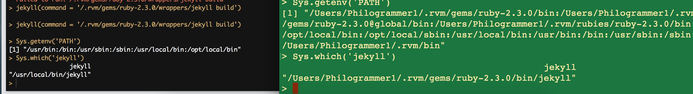
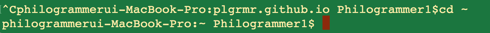
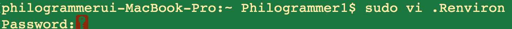
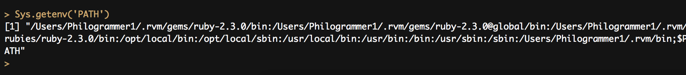

path
R과 다른 언어, 프로그램의 패키지를 쓰다보면
예상치 못하게 에러가 뜨는 경우가 생깁니다.
이에는 다양한 원인이 있을 수도 있겠지만
PATH 환경변수 설정이 다르게 되어있어 에러가 뜨는 경우가
빈번하게 있습니다.
저 같은 경우에는 블로그 세팅시 Knitr 와 Jekyll 을 이용하여
마크다운을 실제 Static 페이지로 바꾸어줄때 Ruby 를 사용하는데
이 경우 RStudio 안에서 Servr 패키지의 Jekyll 명령어를 사용 시
Terminal 상의 PATH 변수와 RStudio 내의 PATH 변수가 달라
RStudio Console 내에서의 Ruby가 제대로 작동하지 않는 문제가 있었습니다.

Sys.getenv(‘PATH’)
RStudio Console 내에서 쳐보면 OS기본의 PATH 가 설정되있는 것을
확인할 수 있습니다.
반면 우측에 터미널창 에서 r에 들어가 PATH를 확인해 보면
ruby의 PATH 가 반영이 되어있는 것을 확인 할 수 있습니다.
이를 변경하는 것은 간단합니다.
r 이 구동될 때 PATH 를 받아들이는 .Renviron 이라는 파일에
PATH를 심어주면 됩니다.
#Step 1

cd ~
명령어로 가장 최상단 디렉토리에 접근합니다.
#Step 2

vi 편집기를 이용하여 Renviron 파일을 만들기 위해
sudo vi .Renviron
을 칩니다.
#Step 3
자신의 개발환경에 맞는 PATH 값을 입력해주세요
/Users/Philogrammer1/.rvm/gems/ruby-2.3.0/bin:
/Users/Philogrammer1/.rvm/gems/ruby-2.3.0@global/bin:
/Users/Philogrammer1/.rvm/rubies/ruby-2.3.0/bin:
/opt/local/bin:
/opt/local/sbin:
/usr/local/bin:
/usr/bin:
/bin:
/usr/sbin:
/sbin:
/Users/Philogrammer1/.rvm/bin
i 는 insert
:wq 는 저장하고 나가기입니다.
vi 에디터에서 PATH를 저장하고 나옵니다.

바뀐 환경값을 찾을 수 있습니다.